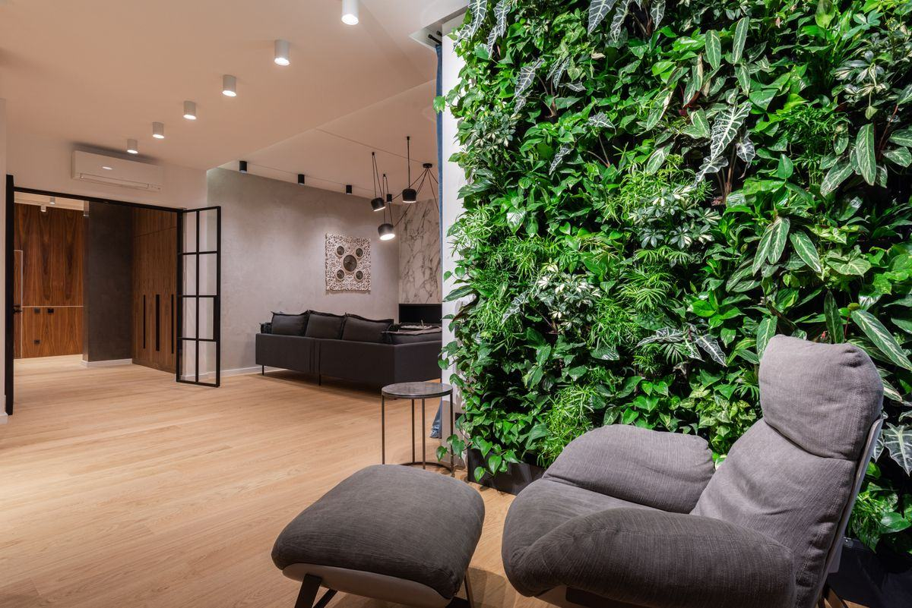

Bureaux, hall d'accueil, restaurant, hôtel ou commerce : décrivez votre projet professionnel en deux minutes et recevez un devis d'installateur sous 24 h ouvrées.
Mis à jour le
Obtenir mon devis gratuitLe choix se joue moins sur l'esthétique que sur ce que le lieu peut accueillir. Quatre questions décident du type de mur :
Des plantes vivantes cultivées sur un support hydroponique ou en substrat. Il respire, évolue, régule l'hygrométrie — en échange d'une irrigation, d'une lumière adaptée et d'un contrat d'entretien.
Le mur vivant →De vrais végétaux — mousses, lichens, feuillages — dont la sève est remplacée par une solution de conservation. Ni eau, ni lumière, ni taille. La solution des lieux sans plomberie.
Le mur sans entretien →Un feuillage synthétique posé sur trame. Le budget le plus bas, adapté aux extérieurs abrités et aux surfaces vues de loin, mais sans bénéfice acoustique ni sensoriel comparable.
Quand y penser →Selon le support et l'exposition, le végétal se décline aussi en mur extérieur, en plafond végétal ou en arbre sur mesure.
Un mur d'accueil d'entreprise, une salle de restaurant et une vitrine de boutique ne répondent pas aux mêmes contraintes techniques ni au même cahier des charges.
Hall d'accueil, open space, salle de réunion, cafétéria. Le mur végétal sert autant l'image de marque que le confort acoustique et la qualité de vie au travail. Budget courant : 9 000 à 18 000 € HT pour 15 m².
Végétaliser des bureaux →Un mur qui devient le fond de photo de la salle, adoucit la réverbération et donne une identité immédiate. La contrainte : la maintenance doit s'insérer dans les horaires d'exploitation.
Hôtellerie & restauration →Vitrine, cabine d'essayage, corner, comptoir : des surfaces souvent réduites où le stabilisé s'impose, parce qu'il ne demande ni eau ni lumière et supporte les réagencements.
Commerces & retail →Halls d'immeubles neufs, établissements de santé, écoles, espaces recevant du public : des projets d'envergure où le végétal soigne l'image de marque et le confort des lieux.
Projets tertiaires →Verdalys ne conçoit ni n'installe : nous cadrons votre projet et le transmettons à un installateur partenaire pertinent.
Type de mur, surface approximative, contexte et délai. Deux minutes de formulaire suffisent.
Nous vérifions la cohérence technique et budgétaire : arrivée d'eau, éclairage, support, accès.
Un installateur en mesure d'intervenir chez vous reprend contact sous 24 h ouvrées.
Devis détaillé après visite ou plans : conception, fourniture, pose et entretien annuel.
Fourchettes hors taxes constatées en France, pose comprise, hors travaux d'électricité et de plomberie préalables.
| Type de mur | Ce que comprend le prix | Prix indicatif HT |
|---|---|---|
| Mur végétal stabilisé | Végétaux stabilisés, cadre, pose | 400 – 900 €/m² |
| Mur végétal naturel vivant | Support, substrat, plants, pose — hors irrigation | 600 – 1 200 €/m² |
| Mur végétal artificiel | Trame synthétique et fixation | 150 – 400 €/m² |
| Entretien d'un mur naturel | Visites, engrais, taille, remplacement de plants | 80 – 200 €/m²/an |
| Projet type bureaux, 15 m² | Étude, fourniture et installation complète | 9 000 – 18 000 € |
Trois bénéfices reviennent systématiquement dans les projets tertiaires, et méritent d'être arbitrés dès la conception plutôt qu'après la pose.
Le feuillage et le substrat absorbent une partie des ondes sonores et réduisent la réverbération des open spaces et des salles à plafond haut.
Acoustique & bien-être →Un mur végétal structure un hall, masque une cloison ingrate ou sépare deux zones sans construire. C'est souvent le premier plan de la photo d'accueil.
Le mur intérieur →La vraie question du projet n'est pas la pose, mais les cinq années qui suivent : arrosage automatique, accès pour la maintenance, budget annuel.
Entretien & arrosage →Mur stabilisé ou vivant, plafond, arbre, cadres, cloisons, plantes en pot : dix façons de végétaliser des locaux professionnels, comparées sur l'entretien, l'eau et le budget.
Lire l'article →8 à 10 ans en intérieur sec : les quatre facteurs qui l'allongent ou la raccourcissent, les signes d'usure et ce que l'on peut rénover.
Lire l'article →Logo découpé, en relief ou dessiné en lichen : les trois techniques, leur lisibilité, l'éclairage et ce qui fait varier le devis.
Lire l'article →Gratuit, sans engagement — deux minutes pour décrire votre projet.
Démarrer ma demandeLa mise en relation couvre toute la France. Chaque grande ville a sa page, avec ses quartiers d'affaires, son climat et les projets que l'on y rencontre le plus.